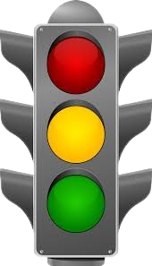

TÜRKİYE CUMHURİYETİ
TARIM VE ORMAN BAKANLIĞI
REPUBLIC OF TÜRKİYE
MINISTRY OF AGRICULTURE AND FORESTRY
Verify of Phytosanitary Certificate (PC) | BSS Doğrula
Phytosanitary Certificates are verified in two stages.
In Stage 1, it is verified that the Phytosanitary Certificate is issued by the National Plant Protection Organisation of Türkiye.
In the 2nd stage, if the product is fresh fruit and vegetables, the exit status from the Customs Territory of Türkiye is checked.
As a result of all these checks, detailed information about the status of the Phytosanitary Certificate to be verified is given as follows.
